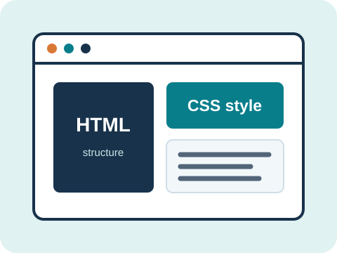

A beginner's field guide
Build a strong foundation for the web.
Learn how HTML gives a page structure, how CSS shapes its appearance, and how thoughtful choices make websites work for everyone.
Start with HTML
Welcome to web development
Web development is the practice of creating websites and applications for the internet. A web page begins with content and structure, then gains visual style and interactive behavior. This guide focuses on the first two foundations: HTML and CSS.
Explore the topics in order or use the contents below to jump to a section.
Table of contents
- HTML Basics — structure and meaning
- CSS Basics — visual design and layout
- Key Concepts — seven ideas to remember
- References — trusted places to keep learning
- About — project details
Key terms
| Term | Meaning |
|---|---|
| HTML | The markup language used to organize and describe web content. |
| CSS | The style-sheet language used to control how web content looks and is arranged. |
| Element | A piece of a page, usually defined by an HTML start tag and end tag. |
| Selector | A pattern in CSS that identifies which HTML elements a rule styles. |
| Responsive design | An approach that adapts a layout to different screen sizes and devices. |